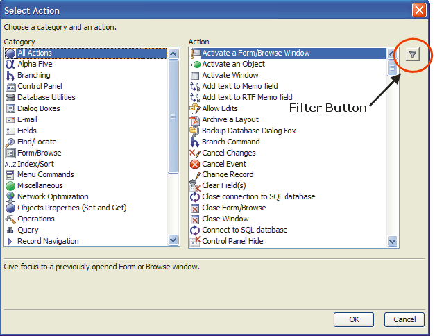

Getting Started - Action Scripting
Typically, scripting in Alpha Five would require knowledge of its programming language Xbasic. However, with Action Scripting, you can program using logical steps or actions, rather than by writing code, reducing the need to learn Xbasic.
In this lesson, you learn about creating Action Scripts and using them to automate and customize your database application.
Contents
Action Scripts can be simple or complex; such as a script performing a single, simple action to more complex scripts with multiple actions, some of which are only executed if certain conditions are true. Alpha Five helps you to easily create scripts encompassing few or multiple tasks.
For example, you could create an Action Script to perform the following tasks:
Save the current record
Create a new record
Fill default values in the City, State, and Zip fields
Save the new record
Give focus to the First Name field
Although you can do these tasks manually, Action Scripts streamline the process and reduce the need for user manipulation. An Action Script lets you achieve the same results in one step rather than in five.
A script is a list of commands that Alpha Five interprets. Action Scripts are a listing of logical steps, or actions. When you create an Action Script, the Alpha Five Script Genie guides you through the process, letting you choose from lists of Actions to define the individual steps of your task.
Action Scripts are basically an easy way to create Xbasic scripts. That is because when you create an Action Script, Alpha Five creates and stores the Xbasic code necessary to execute the Actions. For example, if you select the Action, Hide the Control Panel, Alpha Five interprets the following Xbasic code:
|
:controlpanel.hide() |
You can view the Xbasic code equivalent of any Action Script. You can also convert an Action Script into an Xbasic script, which makes learning Xbasic syntax easier. Action Scripts are a quick and easy way to produce Xbasic scripts, which you can then modify, by changing or adding Xbasic commands, to meet your needs.
An Action is a task that Alpha Five can do. For example, you can create an Action to make a button color green, change a field or text object font, or run an external program. There are also special Actions called branches.
A branch action is a decision point from which two or more courses of action are possible. For example, you can create a dialog which asks the user a question requiring a yes or no answer. If the user answers yes, Alpha Five performs one set of Actions; if the user answers no, Alpha Five performs another set of Actions.
Action Scripting involves using the Code Editor and the Script Genie to assemble Actions that make up tasks you want to automate. In addition, you can attach Action Scripts to buttons on forms, and customize user interactivity with your Alpha Five database.
The Code Editor toolbar has the following command options for scripts and functions.
The Code Editor is the starting point for Action Scripting, where you assemble the Actions that make up a script. Actions are listed sequentially in the order you add them.
You use the buttons above the Code Editor pane for editing your script. Besides the add, delete, and edit buttons, there are up and down arrow buttons for changing the order of Actions. You can modify Actions by selecting an Action and pressing one of the buttons.
In addition, right-clicking on any Action reveals an additional menu for editing Actions.
To create an Action Script:
Open the AlphaMovies database, and click the Code tab in the Control Panel.
 Note : You should
have already created the AlphaMovies database
in the Creating a Database lesson.
Note : You should
have already created the AlphaMovies database
in the Creating a Database lesson.
Select View > Code Editor from the menu bar. The Code Editor window appears.
Click the Action Script button in the toolbar
 . Alpha Five opens
a new pane in the Code Editor.
. Alpha Five opens
a new pane in the Code Editor.
-
The Code Editor lets you work on multiple scripts. Each time you open a new script, Alpha Five adds a new tab to the Code Editor. The Interactive window is always present and is a tool for testing Xbasic code.
In the next steps, you add Actions to build an Action Script. You build a simple script which asks a user for their name, and displays a welcome message.
Click the Add New Action
 button above the Code
Editor pane. The Select Action dialog
box appears.
button above the Code
Editor pane. The Select Action dialog
box appears.

-
The Select Action dialog box has two lists, Category and Action. The selection in the Category list controls the available options in the Action list. Initially, "All Actions" is selected.
There are over 200 hundred different Actions available in Alpha Five. For help in finding the one you want, you can filter Actions, using the Filter
 icon located
next to the Action pane.
icon located
next to the Action pane. -
Click the Filter icon. The Filter Actions dialog box appears.
For the first Action, you want to prompt the user for their name. Enter "Prompt for text" as the filter string, and click OK. Alpha Five displays the Prompt for Text Action in the Select Action dialog box.
Click OK. The Script Genie appears.
The Prompt for Text dialog box lets you define the dialog box Alpha Five displays. Here you specify the dialog box title, the user prompt, and most importantly, the variable name in which Alpha Five stores the user response.
Enter "Who are you?" for the Dialog Title.
Enter "Please enter your name" for the Prompt.
Enter "vcName" for the Variable Name. Using vc as a prefix for the variable name, is a naming convention that denotes a character variable. You can use any variable name you want.
Click Next. Alpha Five lets you enter an optional comment to help you remember what the Action does. Alpha Five creates a default comment, which you can accept or overwrite.
If you convert your Action Script into Xbasic code, the comment appears in the code. It also appears at the bottom of the Script Editor, when you place the focus on an Action Script entry. Entering a specific description can be very useful.
Click Finish. The Code Editor appears with one Action filled in.
Click Save on the toolbar and name the script "Welcome". Welcome appears on the tab of the Code Editor. An asterisk next to the script name indicates that you have made changes to the script, but not saved them. When you save the script, the asterisk disappears. Though the script is not yet complete, you can run it to test your progress.
-
Click the Run button on the toolbar. The Who are you? dialog box appears.
Click Cancel to close the dialog box.
In the next procedure, you create an Action that displays a welcome message to the user.
To add another Action to the script:
In the Code Editor, click the Add New Action button. The Select Action dialog box appears.
Select "Dialog Boxes" from the Category list and "Display a Message Box" from the Action list.
Click OK. The Script Genie appears.
The Display a Message Box dialog box lets you select the style of message box Alpha Five displays. Keep the default selection, a single OK button, and click Next. The Script Genie appears.
Keep the default image selection.
Enter "Welcome" for the Title.
For the message prompt, enter an expression that uses the variable you created in the previous Action, so you can welcome the user by name.
Click the Expression Builder
 button. The Expression
Builder opens.
button. The Expression
Builder opens.Enter the expression: " Welcome" + .
Select "Variable", and click the Insert button. The Select Variable dialog box appears.
Select the "Action Script" category, the "vcName" variable, and click Insert.
Click OK. The Script Genie appears.
Note that the entry in the message prompt starts with an equals (=) sign. This denotes that the entry is an expression that Alpha Five must evaluate when it displays the message box.
Click Next.
You must enter an unique name to identify the message box. Enter "welcome_user".
Keep the other default settings, click Next, and click Finish. The Code Editor appears with two Actions in the Welcome Action Script.
Click Save.
Click Run. Alpha Five prompts for the user name, and then displays a message box welcoming the user by name.
Click OK to close the message box.
In this lesson, you have created a simple Action Script. In the next sections, you learn how to edit, delete, change the order of the Actions, and edit the comment button.
To edit an Action Script:
Open the AlphaMovies database, and display the Code tab in the Control Panel.
Select the "Welcome" script, and click the Design
 button.
The Code Editor appears showing the Actions
in the script. Next, you select the Action you want to edit.
button.
The Code Editor appears showing the Actions
in the script. Next, you select the Action you want to edit.Select the "Display a Message Box" Action, and click the Edit Action button. The Script Genie appears with the values you specified.
Click Next.
In the message to appear in the message box, add the text + ". Thank-you for using Alpha Five."
Click Next twice, and click Finish.
Click Save, and click Run
 to test the script.
to test the script.
Deleting an Action from an Action Script is easy.
To delete an Action from an Action Script:
Select the Action you want to delete.
Click the Delete Action button, or right-click on the Action and select Delete Action from the right-click menu.
Alpha Five executes the Actions in your Action Script in the order that
they appear in the Code Editor. You can change
the order of the Actions by using the Move Action Up
 and Move Action Down
and Move Action Down  buttons, above the Code Editor
pane.
buttons, above the Code Editor
pane.
Editing an Action Script Comment
Edit comments for Actions by right clicking the action and selecting
Edit Comment. Or select the action and click
the Edit Comment button  in the
lower right corner of the Code Editor.
in the
lower right corner of the Code Editor.
As noted previously, Action Scripting is a graphical front-end to the Alpha Five Xbasic programming language. Each Action you define corresponds to some Xbasic code. When you run an Action Script, Alpha Five executes the Xbasic code. You can view the corresponding Xbasic code for each Action in your Action Script.
To view Action Script Xbasic code:
In the Control Panel display the Code tab.
Select the "Welcome Action" Script, and click the Design button. The Code Editor appears displaying the two Actions in the Welcome script.
Right-click on the "Prompt for Text Action", and select View Xbasic, or click the View Xbasic button on the toolbar. The Xbasic Code dialog box appears.
Click the All Actions tab. Alpha Five displays the Xbasic code for all Actions in the current Action Script. The Xbasic Code dialog box lets you easily copy the code to the Windows clipboard by clicking the Copy code to the clipboard button.
Click Close.
In the Welcome Action Script, the second Action, which displays the Welcome message box, executes even when the user clicks the Cancel button, when prompted for his or her name. Since this is not the action that you want Alpha Five to take if the user clicks Cancel, you can make displaying the Welcome message box conditional.
To run the Welcome Action Script:
In the Control Panel display the Code tab.
Select the Welcome Action Script, and click the Run button. The Who are you? dialog box appears.
-
Click Cancel. The Welcome message box appears.
Displaying this message is not the Action you want Alpha Five to take if the user clicks Cancel. You want Alpha Five to suppress this message box from appearing if the user clicks the Cancel button, or you might want to display a different message box.
Click OK.
Alpha Five lets you specify conditions for each Action in an Action Script. Alpha Five evaluates the condition for each Action at run time.
In the Welcome script, if the user clicks the Cancel button in the Who are you? dialog box, the variable set by this Action, vcName, will be blank (have a NULL value). Therefore, you want to display the Welcome message box only when the vcName variable is not NULL.
To edit the Welcome Action Script:
In the Control Panel, click the Code tab.
Select the "Welcome Action Script", and click the Design button. The Code Editor appears.
Click the Show/Hide Conditions button. The Code Editor displays a row for each Action.
A green check mark next to an Action indicates that the Action is not conditional. It will always be executed. You want to make the Display a Message Box Action conditional.
Select the "Display a Message Box" Action.
Check the Action is Conditional check box. Additional options in the Code Editor become visible and Alpha Five displays a red question mark next to the selected Action.
In the Execute Action is drop-down list box, select "Condition Expression is true".
Click the Expression Builder button in the Expression field. The Expression Builder appears.
Enter Var->vcName <> "" and click OK. The Code Editor appears.
Click the Save button on the toolbar.
Click the Run button. The Who are you? dialog box appears.
Click the Cancel button. The dialog box disappears.
Using the Same Condition as Previous Setting
Sometimes several consecutive Actions have the same condition associated with them. Alpha Five has a shortcut that lets you set the condition for an Action to be the same as the condition for the Action preceding it.
In the next procedure, you add a third Action to the Welcome Action Script. This Action opens the Default Form for the Customers table after Alpha Five displays the Welcome message. However, this Action is conditional; you set the condition to be the same as the condition for the Display a Message Box Action.
To use the same condition as Previous setting:
In the Control Panel, display the Code tab.
Select the "Welcome Action Script", and click the Design button. The Code Editor appears.
Select the "Display a Message Box Action", and click Add New Action. The Select Action dialog box appears.
Select the "Form/Browse" Category, and "Open Default Form or Browse" action.
Click OK. The Script Genie appears.
You want to open the Default Form for the Customers table.
Select "Form" from the drop-down list box, "Customers" table, and click Next. The Script Genie appears.
In the Record Selection dialog box you can select the Customers records you want to appear. You want the Default Form to show all the records.
Keep the default, "No additional selection criteria", click Next, and click Finish. The Code Editor appears with the "Open Default Form or Browse" action selected.
Check Action is Conditional and Same as Previous Condition.
Notice that the icon next to the Open Default Form or Browse Action is now a ditto mark, indicating that the Action condition is the same as the previous Action condition. The Same as Previous prompt only appears when the Action immediately above it is conditional.
Click Save, and click Run to test the script.
Click View Xbasic to examine the Xbasic code generated for All Actions.
Creating an Action Script for a Button on a Form
In the previous exercise, you created a Welcome script which can be run at any time by double-clicking it in the Control Panel. as such, it is not associated with any particular event.
Events are pre-named Alpha Five actions that are associated with certain Alpha Five components. For example, clicking on a button on a Form initiates an event called OnPush. When you click on a field or Form, a series of events happen. This series includes the OnArrive event for the field you clicked on, and the OnDepart event for the field you left. Action Scripting in Alpha Five lets you attach scripts that execute when specific events like these occur.
In the following exercise, you put a button on a form, and associate an Action Script that runs when you click the button.
When you put a button on a Form, Alpha Five lets you define the Action for the button in one of three ways:
Select a pre-defined Action
Use the Action Scripting Editor
Use the Xbasic Editor
When creating Action Scripts for button events, you can specify that the button perform a single action, like opening a Form or printing a Report, or a sequence of steps. If you want a button that performs a single task, the easiest method is to select from a list of pre-defined actions.
To create an Action for a button on a Form:
Open the database, display the Control Panel, and click the Tables/Set tab.
Right-click on the Customers table, and select Open Default Form.
Click the Design Mode button on the toolbar. The Customers table Default Form appears in Design Mode, and the Toolbox appears.
If you do not see the Toolbox, select View > Toolbox.
Select the Button Object tool on the Toolbox
 .
.While holding down the left mouse button, draw a small rectangle on the Form, to the right of the Customer_ID field. When you release the mouse button, the Define Button dialog box appears.

Click the Pre-Defined Buttons tab.
The pre-defined actions include all the command options that are available from the Form menus.
Click the + icon next to "Records", and select "First".
Keep the default Appearance and Style (picture only).
Click OK.
Repeat steps 6 through 11 three more times, selecting "Previous", "Next", and "Last". The Customers table Default Form appears with four navigation buttons.
Click Save, and name the Form "Navigation".
Click the Form View button on the toolbar, and test the navigation buttons.
Click the Design Mode button again.
Right-click on the first navigation button, and view the Events menu.
The Events right-click menu lists the events for the selected object, the navigation button on your Form. Note that only the OnPush event appears selected and in bold type. That is because the OnPush event has already been defined.
Select Events > OnPush. The Code Editor appears and shows the script associated with the button OnPush event.
The pre-defined button action is the same as Creating a simple Action Script with one Action. In this case, the button action is "Select Action from the Form Menu".
Click the Edit Action button in the Code Editor, and the Select Action button in the Script Genie. Alpha Five displays the same Form menu options that you saw when you selected the pre-defined buttons tab in the Define Button dialog box.
Click Cancel.
Pre-defined buttons are very useful for initiating most Alpha Five actions. However, to execute more complex, multi-step scripts when users click a button, you must create custom Action Scripts.
Creating Custom Action Scripts
Custom Action Scripts let you combine several Actions into a single script. In the next procedure, you use the Action Scripting Editor to create a custom script that executes the following Actions when a user clicks a button:
Saves the current record
Creates a new record
Sets a field default value
Gives focus to a field, where the user can continue entering data for the new record
To create a custom Action Script:
Display the Control Panel and click the Tables/Set tab.
Right-click on the Customers table, and select Open Default Form.
Click the Design Mode button on the toolbar. The Customers table Default Form appears in Design Mode, and the Toolbox appears. If you do not see the Toolbox, select View > Toolbox.
Select the Button Object tool on the Toolbox.
While holding down the left mouse button, draw a rectangle in the top right corner of the Form. When you release the mouse button, the Define Button dialog box appears.
On the Custom Button tab keep the default Style, "Text only", and change the Label text to "Save Record".
Keep the default settings: Define script for this button now and Use Action Scripting.
Click Next. The embedded Action Script Editor appears.
The embedded Action Script Editor is a quick alternative to using the full Code Editor, where you can edit multiple scripts. To access the full Code Editor, click the Launch Script Editor button.
Click the Add New Action button. The Select Action dialog box appears.
Select the "Records" category and the "Save Record" Action, and click OK. The Script Genie appears.
-
Keep the default selection: "Save the record in the current window", and click Finish. The embedded Action Script Editor appears with the Save Record Action listed.
Click Add New Action.
In the Select Action dialog box, select the "Records" category and the "Enter New Record" Action, and click OK. The Script Genie appears.
Keep the default selection and click Finish. The embedded Action Script Editor appears with the two Actions listed. Next, you want to set the default value of the Country field.
Click Add New Action.
In the Select Action dialog box, select the "Fields"category and the "Set Field Values" Action, and click OK. The Script Genie appears.
Keep the default selection, Set the value of fields in the current window.
Click
to select the field value you want to set.The Select a Control dialog box appears.

Select "Country", and click OK. The Script Genie appears.
You can set the value of the Country field to any value that you specify, to the value in a variable that was previously defined, or to the result of an expression.
Enter "United States" in the Value field, and click Finish. The Action Script Editor appears.
Next, you want to give focus to the First_Name field.
Click Add New Action.
In the Select Action dialog box, select the "Object Properties (Set and Get)" category and the "Activate an Object" Action, and click OK. The Script Genie appears.
Keep the default value for Activate an object in which window.
In the Object Name drop-down list box, select "First_Name", and click OK.
Click Finish. The Action Script Editor appears.
The embedded Action Script Editor now has four Actions.
Click Finish. The Form appears with the Save Record button on it.
Click Save, and give the form a name.
Click the
 Form View button on the toolbar.
Form View button on the toolbar.Make an edit to the current record you are viewing, and click the Save Record button. Alpha Five saves the current record, opens a new record, fills in "United States" as the Country field value, and gives focus to the First_Name field.
In this exercise, you created a script for a button's OnPush event that included four Actions. Using a custom Action Script, you were able to automate several data entry steps.
In this lesson, you learned how to use the Code Editor and Script Genie to create Action Scripts. Alpha Five lets you select from over 200 defined Actions. You learned that Alpha Five converts Action Scripts into Xbasic code, which you can further edit to customize your applications. You learned how to edit, delete, change the order, and edit comments for Actions. You also learned how to make an Action conditional.
You learned how to associate an Action Script with an event, such as selecting a pre-defined action for a button on a Form, and creating a custom Action Script for a multi-step procedure. Action Scripting can help you learn about writing Xbasic code, and further customizing your database application.
See Also
Categorized List of Actions, Creating a New Action Script